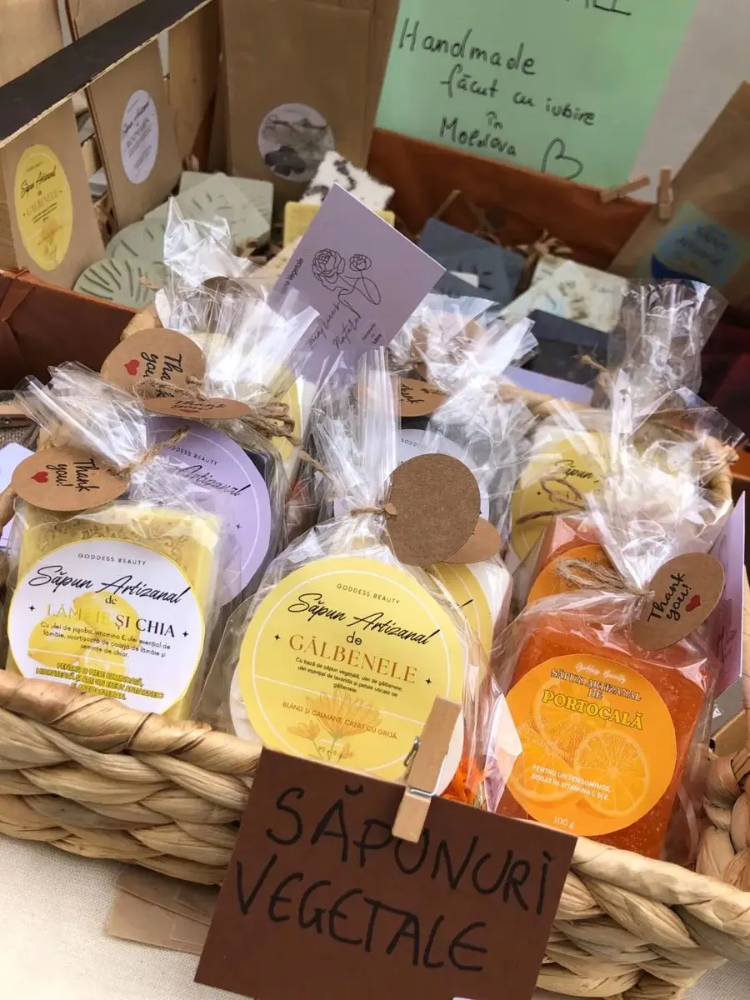

Povestea noastră
Beatrice’s Nature este un atelier din Republica Moldova, unde îngrijirea de zi cu zi se face cu mâna și cu inspirație din natură. Săpunurile artizanale sunt turnate manual pe bază de glicerină și îmbogățite cu argile, uleiuri și flori uscate. Șampoanele solide și balsamurile sunt îmbogățite cu flori, plante, unturi și uleiuri vegetale.
Pe fiecare produs găsești lista de ingrediente, ca să alegi cu încredere ce se potrivește pielii și părului tău.